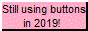
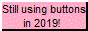
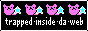
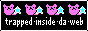
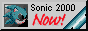
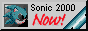

what's up man. i'm Tomio. i'm in 10th grade at the Arlington Career Center, and i made this website for my DE Webdev class.
one of my biggest interests is art. all types. well, some of them. i love drawing (mostly digitally), i love writing, and i play the piano.

Click on the computer to see my journal!


 


 



 
